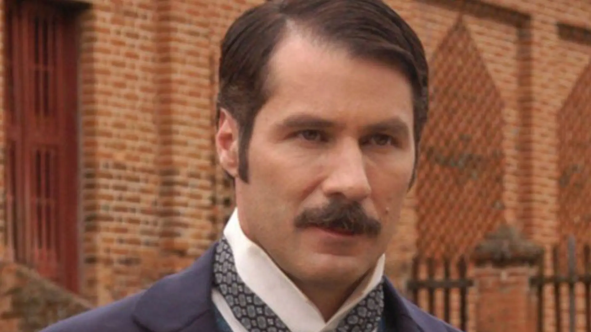

Leôncio Almeida (Leopoldo Pacheco): É o grande vilão da história. Casado com Malvina (Maria Ribeiro), ele nutre uma obsessão doentia e violenta por Isaura. Ele se recusa a conceder a liberdade à escrava, perseguindo-a constantemente com investidas indesejadas e castigos físicos e psicológicos para tentar forçá-la a ser sua.
voltar à página principal